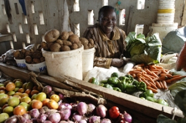
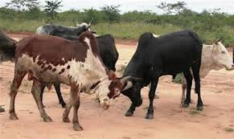

The Taita people of kenya
Brief overview

The Taita people are a Bantu tribe living in the Taita Hills on Kenya's southwest,
near the Tanzania border and surrounding plains.
What is known as the Taita tribe actually consists of three separate but closely-related
tribes:
Wadawida (or Taita), Wasaghala (Sagalla) and Wataveta (Taveta).
How the taitas came to settle
Historians believe that the Taitas migrated from Central Africa alongside other Bantu tribes, arriving in present day Kenya from the south through Shungwaya before finally settling in the fertile Taita hills.
Foods and drinks of the taitas
The traditional diet of the Taita consisted of bananas, pumpkins, cassava, beans, sweet potatoes, cowpeas, and millet. Occasionally, this diet would be supplemented with game meat hunted from the plains.
Why Taitas culture are unique

One very unique aspect of Taita culture is the respect accorded to the dead. In the past,
when a person died, they were buried for a period of about one year, at which time their body would be exhumed.
The skull would be severed from
the rest of the body and taken to a sacred cave - their "proper" abode with the ancestors.
Economic activities of Taitas
Most Taitas practice agriculture as their main economic activity. Horticultural production has recently become an important economic pursuit in the Taita hills.Also rearing dairy cattle and producing most of the milk supply for Kenya's Coast Province and also grow coffee.